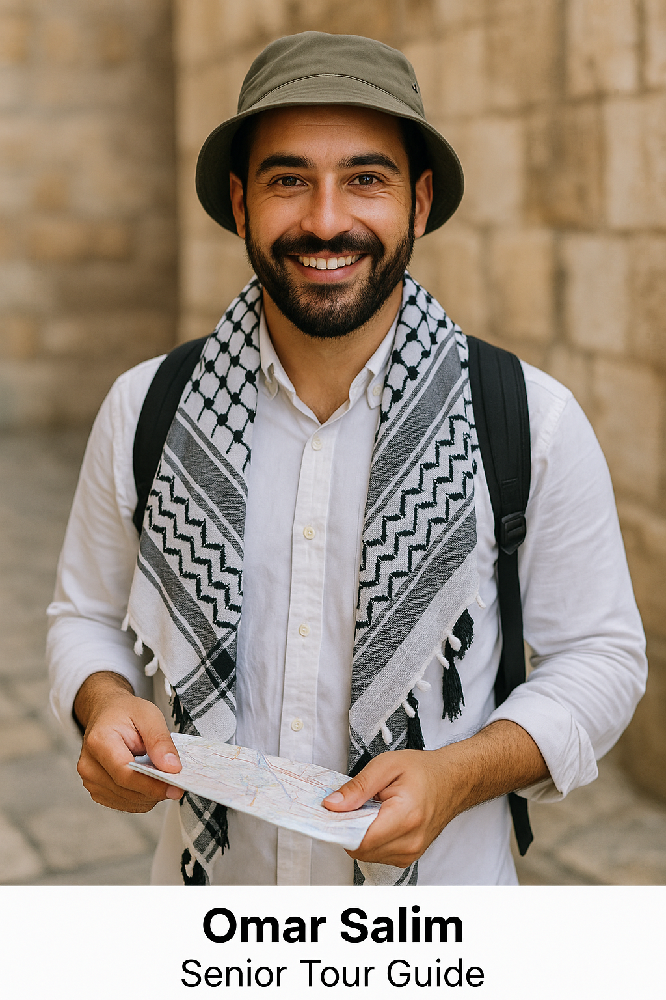

Our Mission
To provide authentic, safe, and well-organized tours in Palestine that connect visitors with local communities, support the local economy, and highlight the cultural and historical richness of the land.
Al-Rihla Travel is a Palestinian travel company based in Ramallah, dedicated to organizing cultural, historical, and religious tours across Palestine. We work with local guides, communities, and partners to offer meaningful and responsible travel experiences.
Our goal is to help visitors discover the beauty of Palestine—its cities, landscapes, culture, and people—through carefully designed programs that respect local life and traditions.
To provide authentic, safe, and well-organized tours in Palestine that connect visitors with local communities, support the local economy, and highlight the cultural and historical richness of the land.
To be a trusted Palestinian travel company recognized for quality service, responsible tourism, and meaningful experiences that stay with our guests long after their journey ends.
Al-Rihla Travel is led by a dedicated team with experience in tourism, hospitality, and cultural programs.
Ahmad founded Al-Rihla Travel with the aim of creating responsible tours that highlight Palestinian history and culture. He has several years of experience in tourism management and works closely with local partners and communities.

Khaled coordinates daily operations, schedules, and logistics for all tours. He ensures that each program runs smoothly and that guests receive clear information and support before and during their trip.

Omar is a licensed tour guide with strong knowledge of Palestinian history, cultural heritage, and local stories. He leads many of our programs and helps visitors connect with each place they visit.
Montaser supports guests with questions, bookings, and special requests. He helps travelers choose the right package and stays in contact with them throughout the planning process.
Al-Rihla Travel is based in Ramallah, Palestine. For questions or cooperation requests, you can reach us using the contact details below: